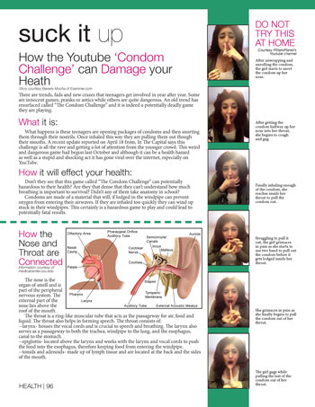
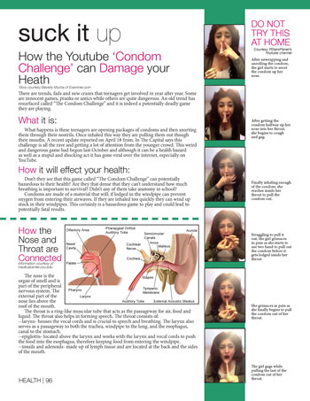

About
My name is Sarah Brand and I am a senior journalism major at UF. I came to UF two years ago after receiving my AA from Hillsborough Community College in 2010. I enjoyed writing at a young age. I learned how to diagram sentence in fouth grade and was a stickler for correct grammar. I continued to enjoy writing throughout middle school and into high school. When high school started I knew I wanted to be on the yearbook staff, and made it happen by my sophomore year. By senior year I was the editor-in-chief and led my staff to create an award-winning book. My family couldn't afford a four year university, so after graduation I attended Hillsborough Community College. After two years I graduated from there with my Associate in Arts in Mass Communication and moved on to UF. When I first arrived to UF I had these huge dreams of becoming a top magazine writer, living in New York and working at a trendy magazine like Nylon. But after I took a design elective, I realized I had made a mistake. What I really enjoyed was designing and not writing. Since that elective I have had little interest in becoming a writer. That being said, I am grateful for the experiences and classes I have taken at UF. They helped me learn to communicate effectively and enabled my knowledge of print, digital and online design to grow. With my degree I hope to incorporate my interest in music and pop culture with my interest in design. I would love to work for any company that will allow me grow as a designer while allowing me to showcase my skills. I am also interested in attending graduate school in the future to advance my skills.
Design
 



Writing
The Ledger
- Officials Urge Care This 4th of July to Prevent Fireworks-Related Injuries July 2, 2013
- Open House Showcases City of Lakeland's LEED-Certified Building June 7, 2013
WUFT
- Residents 'paws' to reflect on 'Save the Florida Panther Day' March 15, 2013
- Gainesville man arrested in connection with baby's death February 15, 2013
- Marion County officials discuss possible FedEx hub February 1, 2013
- For more WUFT articles edited online click here.
The Independent Florida Alligator
- Astronomy program will light up the stars tonight November 30, 2012
- Gas prices fall during holiday season November 14, 2012
- UF College of Dentistry earns grant to update teaching methods November 8, 2012
- Study finds students who tweet through class are more engaged October 30, 2012
- Libertarian vice presidential candidate to speak at UF today October 16, 2012
- Religious group wants Tebow September 26, 2012
Resume
Education
Bachelor of Sceince in Journalism with an Outside Concentration in History
- University of Florida Gainesville, FL May 2012-Present
Associate in Arts in Mass Communication
- Hillsborough Community College Tampa, FL August 2010 - May 2012
Involvement
Society of Professional Journalists UF Chapter August 2012-Present
- Served as Secretary from January 2013- May 2013
- Served as Social Chair from May 2013- Present
- Attended meetings to support and assist in coordinating events and guest speakers
Experience
Creative Director, Orange and Blue Magazine Jan. 2014- May 2014
- Coordinated with art directors in production of the magazine
- Worked to create cohesion within all images
- Coordinated with the art directors to produce a website for the magazine
Intern, The Lakeland Ledger June 2013-July 2013
- Shadowed reporters while on assignments to gain interviewing experience
- Wrote articles for the metro beat
- Worked with copy desk and page designers
Web Producer, WUFT News Jan 2013-May 2013
- Edited online articles for WUFT News through WordPress
- Fact-checked radio and broadcast stories
- Wrote headlines for online articles
Intern, Our Town Magazine Nov. 2012-May 2013
- Reported on and wrote feature articles
- Wrote headlines for articles
- Took photos of events and wrote captions, gaining photojournalism experience
Contributing Writer, The Independent Florida Alligator Sept. 2012-Jan 2013
- Reported as a freelance journalist
- Reported for the university and metro beats
- Worked with editor to edit stories
Minotaur, Bloomingdale Senior High School August 2007-May 2010
- Lead staff as Editor-in-Chief
- Lead staff as Clubs and Sports Editor
- Worked as photographer and staff writer
Host and Takeaway Outback Steakhouse Jan 2010-December 2013 Lithia, FL
Camp Bayshore Counselor Bayshore Christian School June 2006- August 2013 Tampa, FL
Skills
- Basic HTML | Basic CSS | Photoshop | InDesign | Illustrator | WordPress | Twitter | Microsoft Office | Github | Social Media